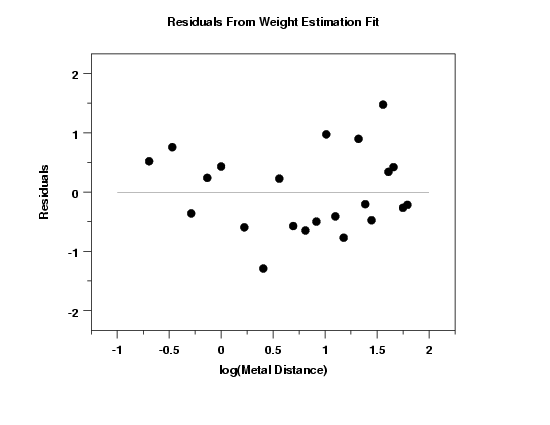
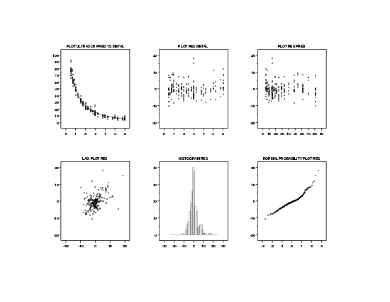

|
4.
Process Modeling
4.6. Case Studies in Process Modeling 4.6.3. Ultrasonic Reference Block Study
|
|||
| Weighting | Another approach when the assumption of constant variance of the errors is violated is to perform a weighted fit. In a weighted fit, we give less weight to the less precise measurements and more weight to more precise measurements when estimating the unknown parameters in the model. | ||
| Finding an Appropriate Weight Function |
Techniques for determining an appropriate weight
function were discussed in detail in
Section 4.4.5.2.
In this case, we have replication in the data, so we can fit the power model $$ \begin{eqnarray} \ln{(\hat{\sigma}_i^2)} & = & \ln{(\gamma_1x_i^{\gamma_2})} \\ & & \\ & = & \ln{(\gamma_1)} + \gamma_2\ln{(x_i}) \end{eqnarray} $$ to the variances from each set of replicates in the data and use $$ w_i = \frac{1}{x^{\hat{\gamma}_2}_i} $$ for the weights. |
||
| Fit for Estimating Weights |
The following results were obtained for the fit
of ln(variances) against ln(means) for the replicate
groups.
Parameter Estimate Stan. Dev t Value γ0 2.5369 0.1919 13.1 γ1 -1.1128 0.1741 -6.4 Residual standard deviation = 0.6099 Residual degrees of freedom = 20 The fit output and plot from the replicate variances against the replicate means shows that the linear fit provides a reasonable fit, with an estimated slope of -1.1128. Based on this fit, we used an estimate of -1.0 for the exponent in the weighting function. |
||
| Residual Plot for Weight Function |

The residual plot from the fit to determine an appropriate weighting function reveals no obvious problems. |
||
| Numerical Results from Weighted Fit |
The results of the weighted fit are shown below.
Parameter Estimate Stan. Dev t Value b1 0.146999 0.1505E-01 9.8 b2 0.005280 0.4021E-03 13.1 b3 0.012388 0.7362E-03 16.8 Residual standard deviation = 4.11 Residual degrees of freedom = 211 |
||
| Plot of Predicted Values |
To assess the quality of the weighted fit, we first generate
a plot of the predicted line with the original data.
The plot of the predicted values with the data indicates a good fit. The model for the weighted fit is $$ \hat{y} = \frac{\exp(-0.147x)}{0.00528 + 0.0124x} $$ |
||
| 6-Plot of Fit |

We need to verify that the weighted fit does not violate the regression assumptions. The 6-plot indicates that the regression assumptions are satisfied. |
||
| Plot of Residuals |
In order to check the assumption of equal error variances in more detail, we generate a full-sized version of the residuals versus the predictor variable. This plot suggests that the residuals now have approximately equal variability. |
||

{kind=link}
{kind=link}
{kind=link}
{kind=link}
{kind=link}